Mit StatO starten.Vom ersten Projekt zur dokumentierten Aktivität.
Ein bebildertes Bedienungsmanual für Teams und Verantwortliche in der Offenen Kinder- und Jugendarbeit.
Das lernst du hier
- Eine Organisation auswählen und die wichtigsten Grundlagen vorbereiten.
- Angebote und Projekte einmal anlegen und für mehrere Termine nutzen.
- Aktivitäten nachträglich dokumentieren oder Teilnahmen während des Angebots zählen.
- Gespeicherte Einträge kontrollieren und erste Ergebnisse auswerten.
- Kalender, Logbuch und Umfragen im Team nutzen sowie gemeinsame Erfassungsgrundlagen vererben.
Ein gemeinsames Beispiel, keine echten Teilnehmendendaten. Alle Beispiele gehören zur eigens angelegten Organisation „Jugendzentrum Beispiel – Manual-Demo“. Die Projekte heißen „Kreativwerkstatt“ und „Offener Treff“. Erfasst werden ausschließlich erfundene, zusammengefasste Zählwerte.
So benutzt du das Manual
Wenn deine Organisation bereits eingerichtet ist, starte bei Kapitel 5. Für den Arbeitsalltag sind besonders Kapitel 7 bis 11 relevant. Die Kennzeichnung am Kapitelanfang zeigt, ob der Schritt für die Einrichtung oder für die tägliche Dokumentation gedacht ist.
Die Screenshots zeigen die deutschsprachige Desktop-Oberfläche. Auf kleineren Geräten können Felder untereinander stehen und Schaltflächen nur als Symbol erscheinen. Datum und Uhrzeit in Eingabefeldern können je nach Browsereinstellung anders formatiert sein. Die Anleitungen beziehen sich auf die sichtbaren Bezeichnungen in der geprüften Dev-Version; spätere Versionen können davon abweichen.
1. Zuerst orientieren
Für alle mit Zugriff auf eine OrganisationPrüfe nach der Anmeldung zuerst, welche Organisation im Kopfbereich ausgewählt ist. Sie bestimmt den Arbeitskontext für Angebote, Aktivitäten und Auswertungen.

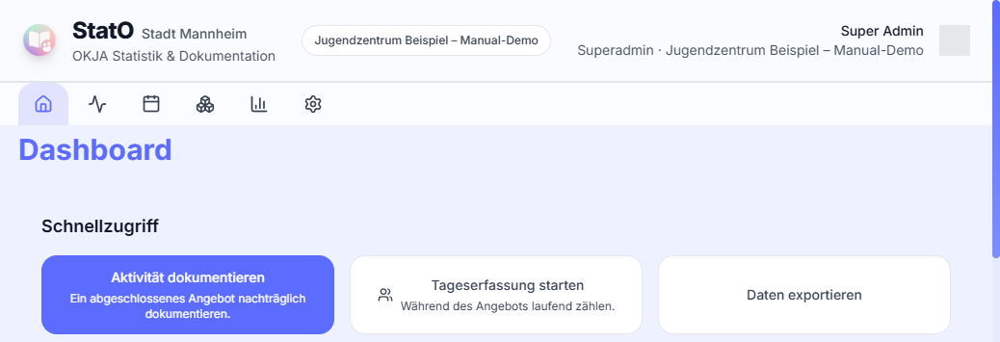
| Bereich | Wofür du ihn nutzt |
|---|---|
| Dashboard | Einstieg und Schnellzugriff auf die Erfassung. |
| Angebote & Projekte | Wiederkehrende Angebote und Projekte anlegen oder bearbeiten. |
| Aktivitäten | Einzelne durchgeführte Termine dokumentieren und kontrollieren. |
| Einstellungen | Kategorien, Kohorten, Team und Einrichtungen vorbereiten. |
| Statistiken | Erfasste Aktivitäten nach Zeitraum und Angebot auswerten. |
Projekt oder Aktivität? Das Projekt ist das Angebot, zum Beispiel „Kreativwerkstatt“. Die Aktivität ist ein konkreter Termin dieses Angebots, zum Beispiel „Plakate gestalten am 9. Oktober“. Ein Projekt kann viele Aktivitäten haben.
Falls Menüpunkte fehlen, können Berechtigungen oder die für deine Organisation freigeschalteten Module der Grund sein. Wende dich an die zuständige Administration.
2. Organisation anlegen und auswählen
Einrichtung · mit entsprechender Admin-BerechtigungBenutzermenü oben rechts → Organisationen → Neue Organisation
- Öffne das Benutzermenü über das Profilbild und wähle Organisationen.
- Klicke auf Neue Organisation und gib einen eindeutigen Namen ein.
- Für eine eigenständige Organisation wähle (Keine – oberste Ebene). Eine übergeordnete Organisation wählst du nur, wenn die neue Einheit bewusst Teil einer bestehenden Hierarchie sein soll.
- Bei Bedarf aktiviere Administrator einladen und ergänze die dann angezeigten Angaben. Für das Demo-Beispiel blieb diese Option ausgeschaltet.
- Klicke auf Organisation anlegen. Öffne anschließend die Organisationsauswahl im Kopfbereich, markiere die neue Organisation und klicke auf Übernehmen.

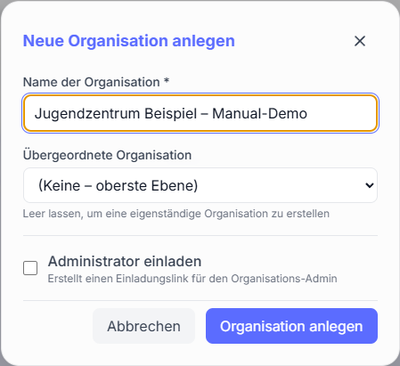

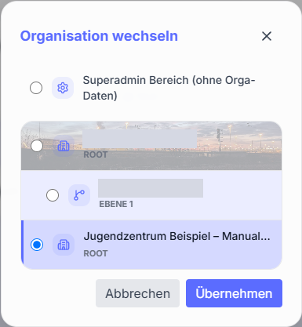
Ergebnis prüfen: Der Name deiner Organisation steht jetzt im Kopfbereich. „Superadmin Bereich (ohne Orga-Daten)“ ist kein Kontext zum Erfassen von Angeboten.
Die Anlage wurde hier als Superadmin geprüft. Wer diese Funktion in deiner Einrichtung nutzen darf, hängt von den vergebenen Rechten ab. Lege nicht für jeden Termin eine neue Organisation an.
3. Kategorien und Alterskohorten vorbereiten
Einrichtung · zuständige AdministrationEinstellungen → Kategorien / Kohorten
Diese Grundlagen machen die spätere Erfassung vergleichbar: Kategorien beschreiben den fachlichen Schwerpunkt, Kohorten bilden die Altersgruppen für die Zählung.
- Öffne Einstellungen → Kategorien. Über Standard-Kategorien erstellen kannst du die vorgeschlagenen Kategorien auswählen und anlegen. Alternativ lege eine eigene Kategorie über das Plus-Symbol an.
- Öffne Kohorten und klicke auf Neue Kohorte.
- Trage Name, Min Alter, Max Alter und Sortierung ein. Im Beispiel: „12–17 Jahre“, Minimum 12, Maximum 17, Sortierung 1.
- Speichere über das Speichern-Symbol. Wiederhole den Schritt für weitere benötigte Altersgruppen.

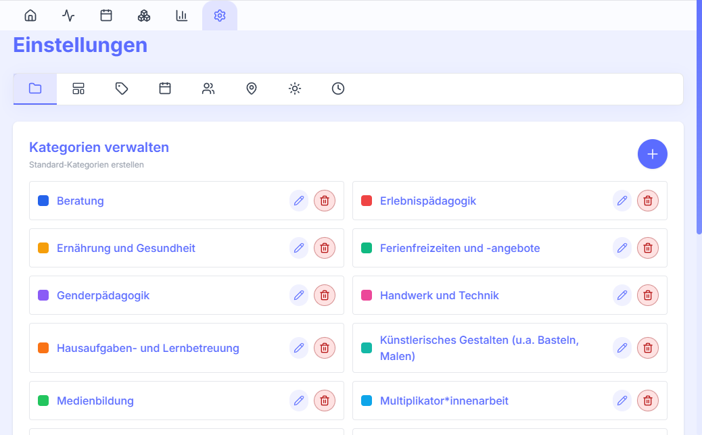

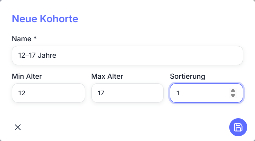
Vor der ersten Zählung einrichten. Im geprüften neuen Org-Kontext waren zunächst keine Kohorten vorhanden. Ohne sie fehlen die Eingabereihen für Teilnehmendenzahlen. Stimmt die Altersgruppen im Team ab, deckt eure Zielgruppe vollständig ab und vermeidet Überschneidungen. Die zwei Demo-Gruppen sind keine verbindliche fachliche Vorgabe.
Ergebnis prüfen: In der Aktivitätsmaske sind die vorgesehenen Altersgruppen als eigene Zeilen sichtbar.
4. Standorte und Team vorbereiten
Einrichtung · zuständige AdministrationStandorte / Räume
- Öffne Einstellungen → Einrichtungen → Neue Einrichtung.
- Gib den Namen ein, zum Beispiel „Kreativraum“. Adresse und Raumtyp kannst du bei Bedarf ergänzen.
- Klicke auf Speichern. Der Standort ist danach bei Aktivitäten auswählbar.
Benutzerzugang und Team unterscheiden
Für den Zugang zur App öffnest du Benutzermenü → Organisationen und klickst im Organisationsbaum auf den Namen der gewünschten Organisation. Im Benutzerfenster kannst du eine E-Mail-Adresse eintragen und Einladung senden wählen.

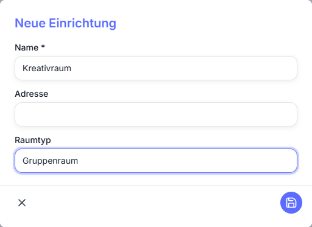

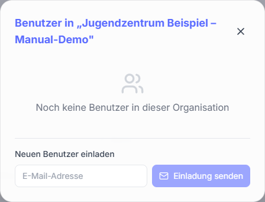
Ein Team-Eintrag ist nicht automatisch ein App-Zugang. Unter Einstellungen → Team werden die für die Angebotszuordnung verfügbaren Mitarbeitenden und Helfer verwaltet. Benutzerkonten, Einladungen und Zugriffsrechte werden davon getrennt verwaltet. Nutze nur die tatsächlich benötigten Rechte.
Einladungsannahme und Änderungen von Benutzerrollen sind nicht Bestandteil dieses ersten, im Browser geprüften Einstiegsmanuals.
5. Das erste Projekt anlegen
Angebotsplanung · mit BearbeitungsrechtAngebote & Projekte → Neues Angebot / Projekt
- Klicke auf Neues Angebot / Projekt.
- Trage den Titel ein: im Beispiel „Kreativwerkstatt“.
- Wähle den passenden Typ, hier Projekt (offen). Titel und Typ sind Pflichtangaben.
- Ergänze die Zielgruppe und wähle die fachliche Kategorie, hier „Künstlerisches Gestalten (u.a. Basteln, Malen)“.
- Scrolle zu Standardzeiten für Aktivitäten und hinterlege Start und Ende, hier 15:00 und 17:00 Uhr. Diese Werte werden bei der späteren Erfassung vorgeschlagen.
- Bei Bedarf ergänze Tags, Bild, Farbe, Team, Unterlagen und Beschreibung. Klicke auf Speichern.

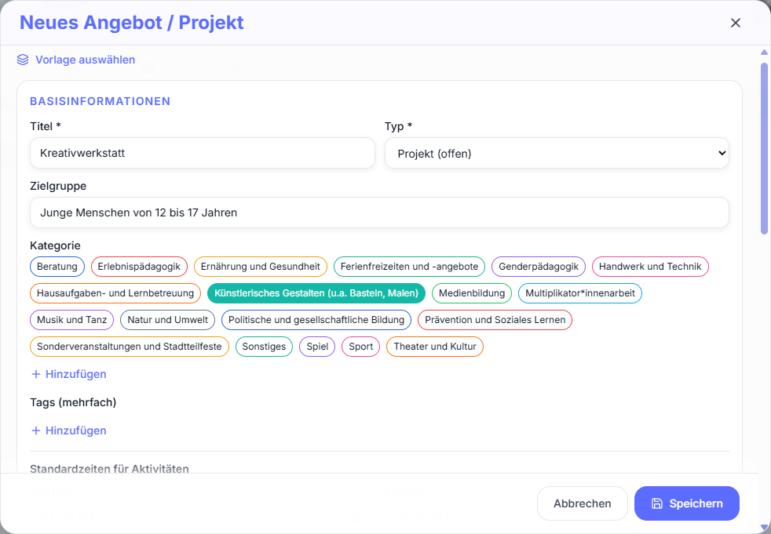
Ergebnis prüfen: Nach dem Speichern erscheint „Kreativwerkstatt“ in der Angebotsübersicht. Ein angelegtes Projekt ist noch keine dokumentierte Aktivität.
6. Angebote für mehrere Termine nutzen
Angebotsplanung · mit BearbeitungsrechtLege ein wiederkehrendes Angebot einmal an. Jeder durchgeführte Termin wird später als eigene Aktivität diesem Angebot zugeordnet.

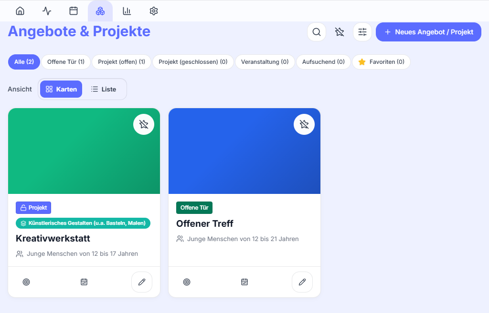
- Für einen offenen Regelbetrieb lege beispielsweise „Offener Treff“ mit Typ Offene Tür an.
- Hinterlege die üblichen Zeiten, im Beispiel 14:00 bis 18:00 Uhr.
- Nutze die Typfilter oder die Suche in der Übersicht, um Angebote wiederzufinden.
- Über das Stift-Symbol bearbeitest du ein vorhandenes Angebot. Über den Projekttitel kannst du die zugehörigen Aktivitäten anzeigen.
| Typ | Orientierung für die Auswahl |
|---|---|
| Offene Tür | Offener Treff / offener Regelbetrieb. |
| Projekt (offen) | Projektangebot mit offenem Zugang. |
| Projekt (geschlossen) | Projektangebot für eine festgelegte Gruppe. |
| Veranstaltung | Ein Veranstaltungsangebot. |
| Aufsuchend | Ein Angebot der aufsuchenden Arbeit. |
Die genaue fachliche Abgrenzung stimmt ihr in eurer Organisation ab. „Projekt (geschlossen)“ beschreibt hier den Angebotstyp und bedeutet nicht automatisch, dass ein Projekt abgeschlossen ist.
7. Eine Aktivität nachträglich dokumentieren
Arbeitsalltag · mit BearbeitungsrechtDashboard → Aktivität dokumentieren → Projekt wählen
- Wähle im Dashboard Aktivität dokumentieren und dann das passende Angebot, hier Kreativwerkstatt. Alternativ beginnt die Erfassung im Bereich Aktivitäten.
- Prüfe Datum und Standort. Im Beispiel: 09.10.2026 und „Kreativraum“. Das vorgeschlagene heutige Datum musst du für vergangene Termine ändern.
- Ergänze einen aussagekräftigen Titel und kontrolliere Start und Ende. Projekt-Standardzeiten sind nur Vorschläge; trage die tatsächlichen Zeiten ein.
- Trage die Zählwerte in die passende Alterskohorte ein. m steht für männlich, w für weiblich, d für divers; Σ zeigt die Summe.
- Prüfe die Kategorie und ergänze bei Bedarf Tags und kurze fachliche Notizen. In dieser Maske ist eine Kategorie pro Aktivität auswählbar.
- Kontrolliere den Status oben rechts. Für das durchgeführte Beispiel ist Stattgefunden richtig. Klicke auf Speichern.

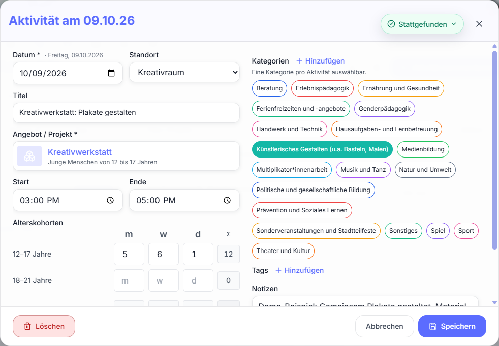
Nur zusammengefasste Zahlen. Im Beispiel ergeben 5 + 6 + 1 insgesamt 12 Teilnahmen. Keine Namen oder identifizierbaren Angaben zu jungen Menschen in Titel und Notizen eintragen. Fachliche Beobachtungen kurz und sachlich formulieren.
8. Die Tageserfassung starten
Arbeitsalltag · laufende ZählungDashboard → Tageserfassung starten
Nutze die Tageserfassung, wenn du die Zählwerte während des Angebots sammeln möchtest, statt sie anschließend vollständig einzutragen.
- Klicke auf Tageserfassung starten.
- Wähle das Projekt, im Beispiel Offener Treff.
- Wähle den Standort.
- Prüfe die Startzeit. Das Projekt kann eine Standardzeit vorschlagen. Über das Uhr-Symbol lässt sich eine aktuelle Uhrzeit übernehmen; kontrolliere den angezeigten Wert.
- Klicke erneut auf Tageserfassung starten, um zur Zählansicht zu wechseln.

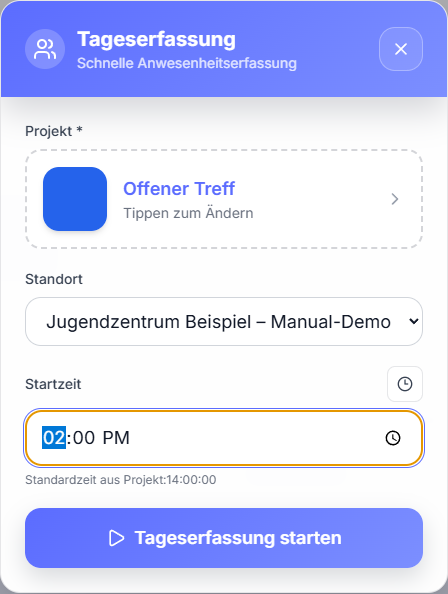
Vorab eine Zählregel vereinbaren. Stimmt im Team ab, welche Teilnahme wann gezählt wird und wie ihr Wiedereintritte behandelt. Die App kennt keine individuellen Teilnehmenden und kann doppelte Zählungen derselben Person nicht anhand einer Identität erkennen.
9. Teilnahmen laufend zählen
Arbeitsalltag · laufende Zählung- Suche die passende Alterskohorte und die Spalte m, w oder d.
- Einmal tippen oder klicken erhöht den Wert um 1.
- Für eine Korrektur nach unten: lange drücken, nach unten wischen oder am Desktop rechtsklicken. Das verringert den Wert um 1.
- Behalte die Zeilensummen und die Gesamtsumme im Blick.
- Am Ende wähle Abschließen & Speichern, um zur Abschlusskontrolle zu gelangen.

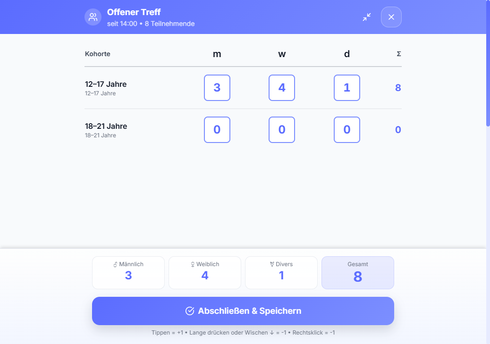
Minimieren ist nicht Abschließen. Über Minimieren kannst du zur App zurückkehren und die laufende Erfassung über Tageserfassung fortsetzen wieder öffnen. Ein endgültiger Aktivitätseintrag entsteht erst beim Speichern im Abschlussdialog. Abbrechen → Session abbrechen verwirft dagegen die Zählungen.
Verlasse dich bei einer laufenden Sitzung nicht auf eine dauerhafte oder geräteübergreifende Sicherung. Schließe die Erfassung zeitnah ab und kontrolliere anschließend den gespeicherten Eintrag.
10. Die Erfassung abschließen und speichern
Arbeitsalltag · Abschlusskontrolle- Prüfe im Dialog Erfassung abschließen das Angebot, den Standort und die zusammengefassten Zählwerte.
- Kontrolliere Startzeit und Endzeit. Die vorbelegte Endzeit kann vom tatsächlichen Ende abweichen.
- Ergänze bei Bedarf einen Titel und sachliche Notizen / Besondere Vorkommnisse.
- Wenn Zählwerte nicht stimmen, gehe mit Zurück wieder zur Zählansicht.
- Klicke auf Speichern und warte auf die Speicherbestätigung. Kontrolliere danach die Aktivität in der Liste.

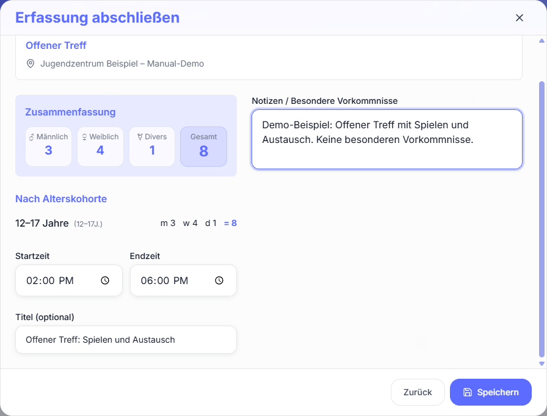
Ergebnis prüfen: Der offene Treff ist als Aktivität mit 8 Teilnahmen und 240 Minuten gespeichert.
Nicht doppelt erfassen. Nach dem Abschluss der Tageserfassung brauchst du denselben Termin nicht noch einmal über „Aktivität dokumentieren“ anzulegen. Korrigiere stattdessen den bereits gespeicherten Eintrag.
11. Gespeicherte Aktivitäten prüfen
Arbeitsalltag · QualitätskontrolleAktivitäten → Eintrag suchen → Bearbeiten
- Öffne den Bereich Aktivitäten. Suche den Termin über die Liste, das Suchsymbol oder den Erweiterten Filter.
- Prüfe Datum, Typ, Titel / Projekt, Teilnehmende und Dauer.
- Über das Stift-Symbol / Bearbeiten öffnest du den Eintrag. Korrigiere bei Bedarf Werte und speichere erneut.
- Öffne den Eintrag nach dem Speichern bei Bedarf nochmals, um auch Standort, Kohorten und Notizen zu prüfen.

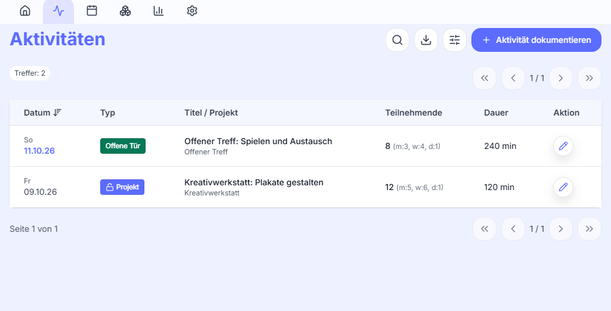
| Aktivität | Teilnahmen | Dauer |
|---|---|---|
| Kreativwerkstatt · 09.10.2026 | 12 (m 5 / w 6 / d 1) | 120 Minuten |
| Offener Treff · 11.10.2026 | 8 (m 3 / w 4 / d 1) | 240 Minuten |
Wenn du einen Eintrag nicht findest: Prüfe zuerst die aktive Organisation sowie Such- und Filtereinstellungen. Lege den Termin nicht vorschnell erneut an. Eine noch laufende Tageserfassung ist außerdem noch kein endgültig gespeicherter Eintrag.
12. Die erste Auswertung kontrollieren
Auswertung · mit Zugriff auf StatistikenStatistiken → Auswertung
- Wähle Jahr oder Monat und den passenden Zeitraum, hier 2026.
- Für den Gesamtüberblick wähle Alle Typen und Alle Projekte. Für ein einzelnes Angebot wähle dessen Projektfilter.
- Prüfe die Kennzahlen in der Ansicht Absolut. Weitere Filter erreichst du über das Filter-Symbol.
- Scrolle bei Bedarf zu den Diagrammen und zur Liste Alle Aktivitäten (gefiltert), um die zugrunde liegenden Einträge zu kontrollieren.

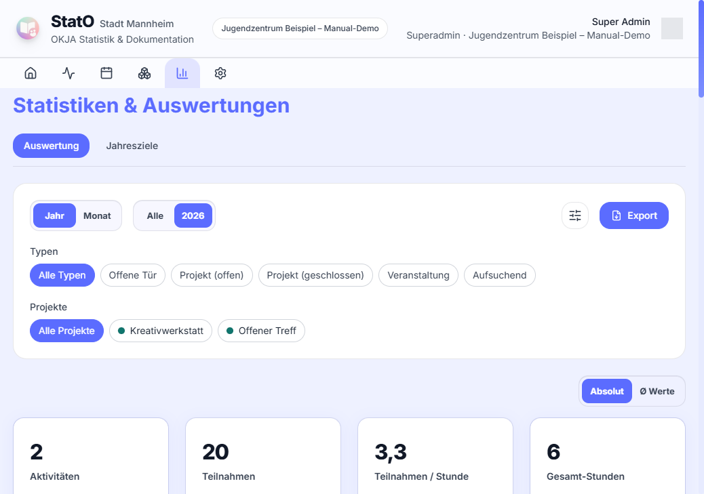
Die Beispielwerte lassen sich nachrechnen: 12 + 8 = 20 Teilnahmen; 120 + 240 = 360 Minuten = 6 Stunden. 20 ÷ 6 ergibt gerundet 3,3 Teilnahmen / Stunde.
Teilnahmen sind nicht eindeutige Personen. Besucht eine Person mehrere Termine, kann sie in mehreren Aktivitäten mitgezählt werden. Auch „Gesamt-Stunden“ im Beispiel sind die summierten Aktivitätsdauern – nicht automatisch Personalstunden oder Teilnehmendenstunden.
13. Ergebnisse exportieren
Auswertung · mit ExportberechtigungStatistiken → Auswertung → Export
- Stelle vor dem Export den gewünschten Zeitraum und die passenden Filter ein.
- Klicke auf Export.
- Prüfe die angezeigte Organisation, den Zeitraum und die Anzahl der Aktivitäten.
- Wähle das benötigte Format. Kontrolliere danach die heruntergeladene Datei, bevor du sie weitergibst.

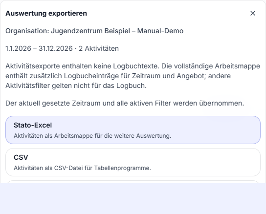
| Format | Angezeigter Zweck |
|---|---|
| Stato-Excel | Aktivitäten als Arbeitsmappe zur weiteren Auswertung. |
| CSV | Aktivitäten als CSV-Datei für Tabellenprogramme. |
| Vollständige Arbeitsmappe | Zusätzlich Kohorten, Projekt-KPIs und Logbuch. |
Logbuchtexte bewusst behandeln. Laut Exportdialog enthalten Aktivitätsexporte keine Logbuchtexte. Die vollständige Arbeitsmappe enthält zusätzlich Logbucheinträge für Zeitraum und Angebot; andere Aktivitätsfilter gelten nicht für das Logbuch. Prüfe deshalb den Umfang und die Empfänger besonders sorgfältig.
14. Filter und Kennzahlen verstehen
Auswertung · mit Zugriff auf StatistikenStatistiken → Auswertung → Erweiterter Filter
- Lege die Fragestellung fest: gesamtes Jahr, einzelnes Angebot oder bestimmte Wochentage?
- Wähle Zeitraum, Typ und Projekt. Unter Erweiterter Filter stehen zusätzlich Von / Bis, Schnellauswahl, Status, Schließtage und Wochentage zur Verfügung.
- Für tatsächlich durchgeführte Angebote nutze Stattgefunden. Ausgefallen ist eine andere Betrachtung. Bestätige Änderungen mit Übernehmen.
- Prüfe die Tabelle Alle Aktivitäten (gefiltert). Vergleiche die Kennzahlen erst, wenn dieselben Definitionen und Filter gelten.

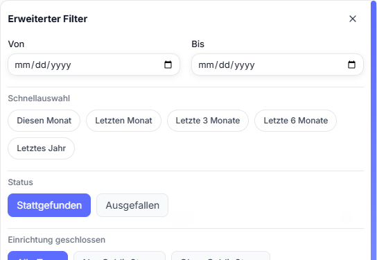
Die Diagramme beantworten unterschiedliche Fragen: Tätigkeitstypen zeigen den Angebotsmix, Kohorten und Geschlechter die erfassten Teilnahmen, der Zeitverlauf die Entwicklung im gewählten Zeitraster. Prozentwerte immer zusammen mit der zugrunde liegenden Anzahl lesen. Das Wochenprofil ist eine verdichtete Darstellung und kein Nachweis individueller Anwesenheitszeiten.
Absolut und Ø Werte sind verschiedene Darstellungen. Ein Durchschnitt benötigt einen Bezugswert: pro Aktivität, pro Stunde oder pro Zeitabschnitt sind nicht dasselbe. Nutze für die erste Plausibilitätskontrolle die absoluten Werte und die Einzeltabelle.
Ein Projektfilter verändert den Bezugsrahmen
Im Jahresfilter 2026 liefert die Auswahl Kreativwerkstatt genau eine Aktivität, zwölf Teilnahmen und zwei Stunden. Daraus ergeben sich 12 ÷ 2 = 6 Teilnahmen / Stunde.

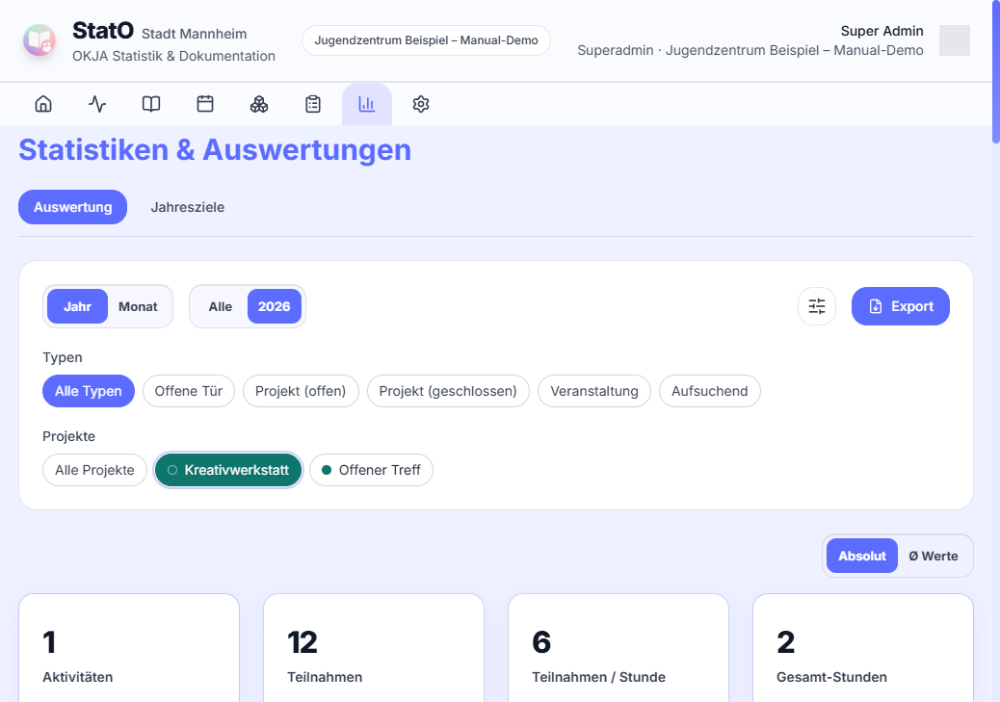
Nicht Mittelwerte ungewichtet mitteln. Kreativwerkstatt: 12 ÷ 2 = 6. Offener Treff: 8 ÷ 4 = 2. Zusammen: (12 + 8) ÷ (2 + 4) = 3,33 – nicht (6 + 2) ÷ 2 = 4. Der separate Leitfaden zur Datenqualität erklärt passende Zähleinheiten und Vergleichsregeln.
Die Darstellung allein erklärt keine Ursachen: Mehr Teilnahmen bedeuten nicht automatisch bessere Wirkung. Feiertage, Schließungen, Erfassungsumfang und Angebotsstruktur können Vergleiche beeinflussen.
15. Aktivitäten im Kalender finden
Arbeitsalltag · mit KalenderzugriffKalender → Monat / Woche
- Öffne Kalender. Nutze die Pfeile für den vorherigen oder nächsten Zeitraum.
- Wechsle zwischen Monat und Woche. Analyse ist die weitere angebotene Ansicht.
- Wähle die Tageszahl, um Aktivitäten dieses Tages anzuzeigen. Ein vorhandener Angebotseintrag lässt sich öffnen; die zugehörige Bearbeitungsaktion dient zur Korrektur.
- Zum Erfassen nutze das Plus am gewünschten Tag: Aktivität zu … hinzufügen. Wähle danach das Projekt.

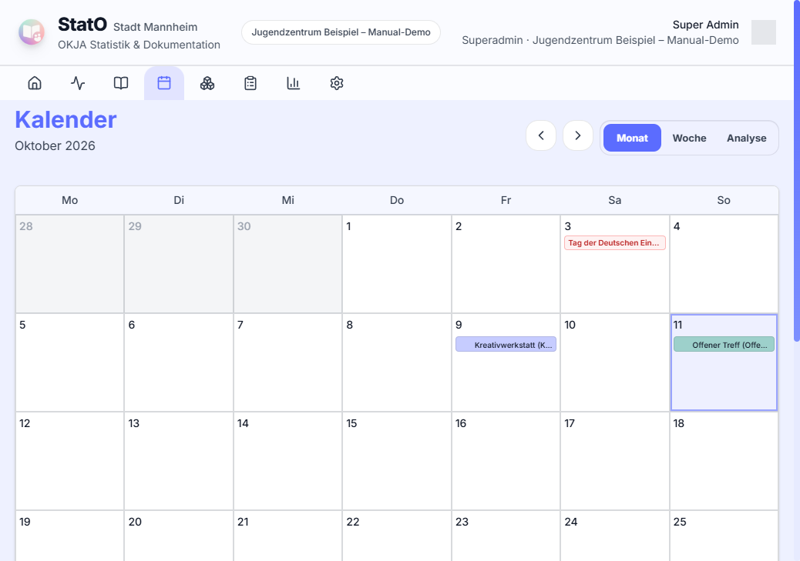
Kein unverbindlicher Planungsstatus im geprüften Editor. Die Aktivitätserfassung bietet „Stattgefunden“ und „Ausgefallen“, nicht „Geplant“. Speichere einen zukünftigen Termin daher nicht vorsorglich als stattgefunden. Das würde Durchführung und Statistik verfälschen.
Vom Kalendertag zur Erfassung
Der Kalender öffnet denselben fachlichen Erfassungsvorgang wie die Aktivitätsdokumentation: Datum, Standort, Titel, Angebot, tatsächliche Zeiten und Zählwerte müssen stimmen. Über die Status-Schaltfläche oben unterscheidest du Stattgefunden und Ausgefallen.

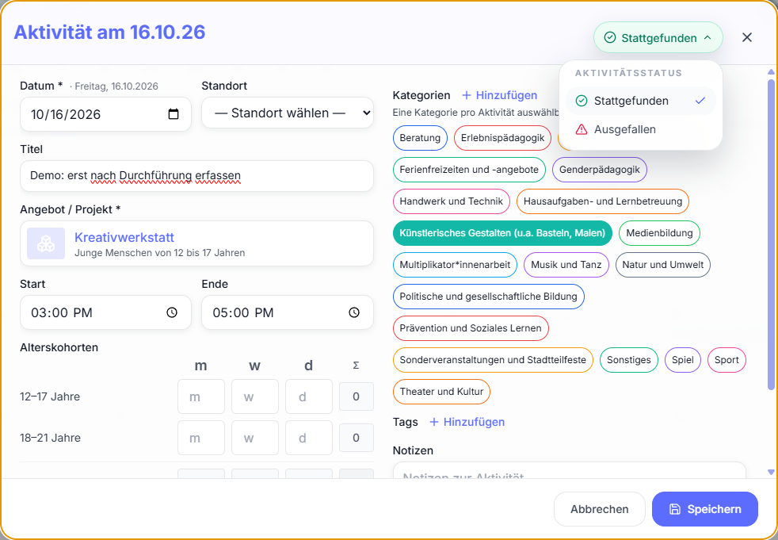
Nach einer tatsächlichen Durchführung: Werte prüfen, Speichern und den Eintrag im Kalender sowie in der Aktivitätsliste kontrollieren. Bei einem Ausfall keine fiktiven Teilnahmen dokumentieren. Die Einrichtungsschließung wird separat über die Aktion am Kalendertag verwaltet; sie ist nicht dasselbe wie der Status einer einzelnen Aktivität.
Die Anlage einer Schließzeit, Analyseansicht und Wochenansicht wurden für diesen Entwurf nicht als vollständige Arbeitsabläufe durchgespielt.
16. Logbuch und Umfragen freischalten
Einrichtung · zuständige AdministrationBenutzermenü → Organisationen → Module
- Suche in der Organisationsverwaltung die richtige Organisation.
- Öffne deren Module-Menü und aktiviere bei Bedarf Logbuch und Umfragen.
- Wähle die Organisation im Kopfbereich und kontrolliere, ob die Navigation die Bereiche anzeigt. Zugriffsrechte müssen ebenfalls zur Aufgabe passen.

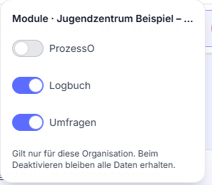
Deaktivieren ist kein Löschen. Laut Modulmenü bleiben Daten beim Deaktivieren erhalten. Module werden pro Organisation geschaltet; die Freigabe bei der übergeordneten Organisation ist keine automatische Freigabe für jeden Standort.
17. Eine Übergabe im Logbuch festhalten
Arbeitsalltag · mit LogbuchberechtigungLogbuch → Neuer Eintrag
- Wähle Neuer Eintrag. Prüfe den Zeitpunkt und wähle die Eintragsart, hier „Übergabe“.
- Formuliere einen kurzen Titel und eine sachliche Beschreibung: Was ist beobachtet, was ist vereinbart, was bleibt offen?
- Verknüpfe bei Bedarf Projekt und/oder Aktivität. Unser gespeicherter Eintrag ist mit „Kreativwerkstatt“ verknüpft.
- Prüfe die Sichtbarkeit: „Ganzes Team“ oder „Nur Admins“. Speichere und kontrolliere den angezeigten Eintrag.

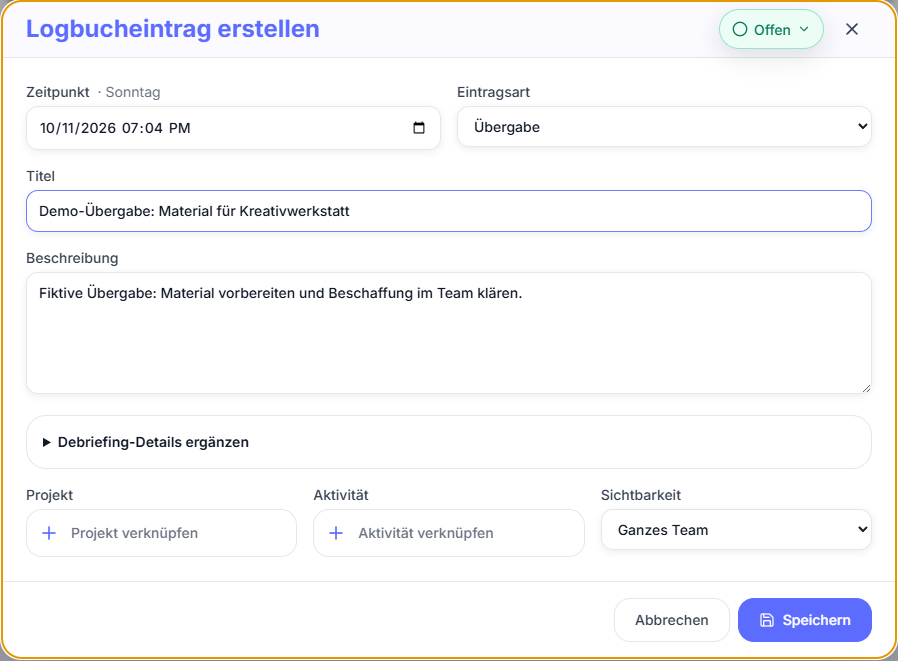
Qualitative Dokumentation ersetzt keine Zählung. Ein Logbucheintrag erzeugt nicht automatisch eine statistische Aktivität. Keine unnötigen Namen, Diagnosen oder sensiblen Falldetails aufnehmen. „Nur Admins“ ersetzt weder Datenminimierung noch eure fachlichen Datenschutzregeln.
Prüfe den Zeitpunkt nach dem Speichern: In der geprüften Dev-Version wurde im Eingabedialog eine andere Uhrzeit als in der Detailanzeige dargestellt. Übernimm Zeitangaben nicht ungeprüft; bei einer Abweichung den Betreiber zur Klärung einbeziehen.
18. Besprechen und nachverfolgen
Logbuch → Eintrag öffnen → Eintragsdetails
- Öffne den Eintrag und lies Dokumentation sowie Verknüpfungen.
- Ergänze eine konkrete Teamabsprache unter Kommentar hinzufügen und bestätige mit Kommentar senden.
- Wähle den passenden Status: Offen, Besprochen oder Nachverfolgung. Unser Materialthema bleibt zur Nachverfolgung markiert.
- Nutze in der Übersicht Offene Besprechungspunkte, Suche oder erweiterten Filter für die nächste Teamsitzung. Archiv dient zur separaten Anzeige archivierter Einträge.

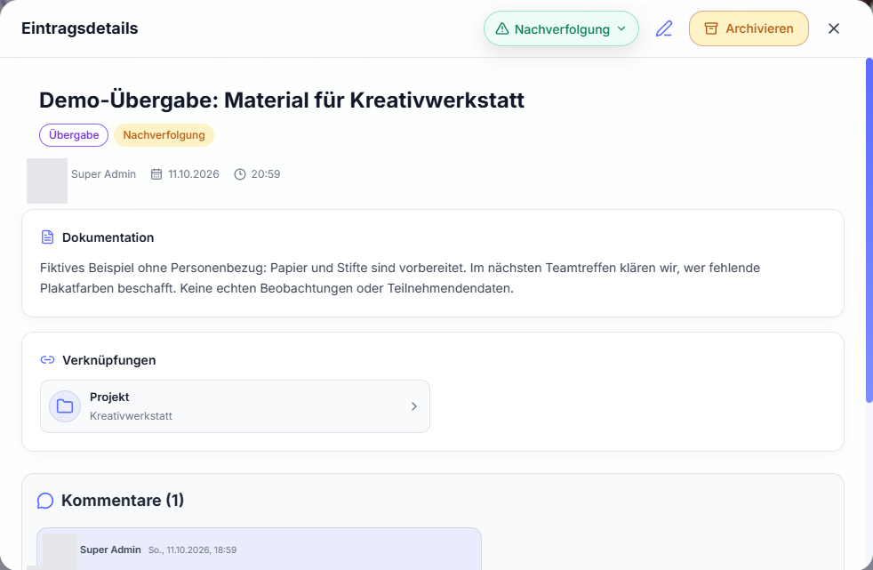
Bearbeiten korrigiert den Inhalt; Archivieren räumt die Arbeitsübersicht auf. Eine Besprechung ist nicht automatisch die Erledigung jeder vereinbarten Aufgabe. Haltet Verantwortlichkeit und nächsten Prüftermin ausdrücklich im Text fest.
Archivierung und Logbuchexport wurden nicht durchgeführt. Vor einem Export mit Texten den Empfängerkreis und die enthaltenen Informationen prüfen.
19. Eine kleine Umfrage vorbereiten
Team / Auswertung · mit UmfrageberechtigungUmfragen → Neue Umfrage → Grunddaten
- Gib einen verständlichen Titel und eine kurze Einleitung für Teilnehmende ein. Benenne Zweck, Freiwilligkeit und den Umgang mit den Ergebnissen.
- Wähle optional ein Projekt. Ohne Zuordnung bleibt es eine allgemeine Umfrage.
- Erwartete Teilnehmende ist optional und dient der Rücklaufquote. Verwende nur eine fachlich begründete Bezugszahl.
- Entscheide, ob Mehrere Antworten pro Gerät erlauben für ein gemeinsames Tablet benötigt wird.
- Nutze eine Vorlage oder Leere Umfrage und wechsle über Weiter zu Fragen zum Fragebogen.

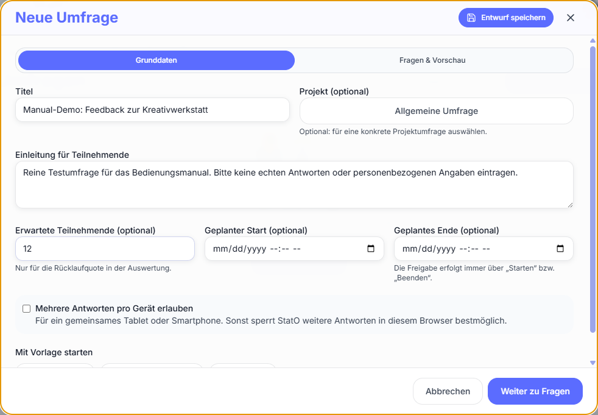
Plantermine sind keine automatische Veröffentlichung. Die Oberfläche weist darauf hin: Freigabe erfolgt über „Starten“ und „Beenden“. Prüfe vor dem Start den kompletten Fragebogen.
20. Fragen und Vorschau prüfen
Neue Umfrage → Fragen & Vorschau
- Öffne eine Frage zum Bearbeiten. Passe Fragetext und Antwortformat an: eine Auswahl, mehrere Auswahl, Bewertung 1–5 oder Freitext.
- Bei Bewertungen beschrifte beide Enden verständlich. Hier: „Gar nicht gut“ und „Sehr gut“.
- Bei Auswahlfragen ersetze Platzhalter wie Option 1 / Option 2 durch tatsächliche Antwortmöglichkeiten. Entferne Fragen, die für deinen Zweck nicht nötig sind.
- Prüfe Antwort ist erforderlich. Demografische Angaben sollten freiwillig bleiben; erhebe sie nur bei begründetem Bedarf.
- Nutze Vorschau, prüfe Reihenfolge und Verständlichkeit, dann Entwurf speichern.

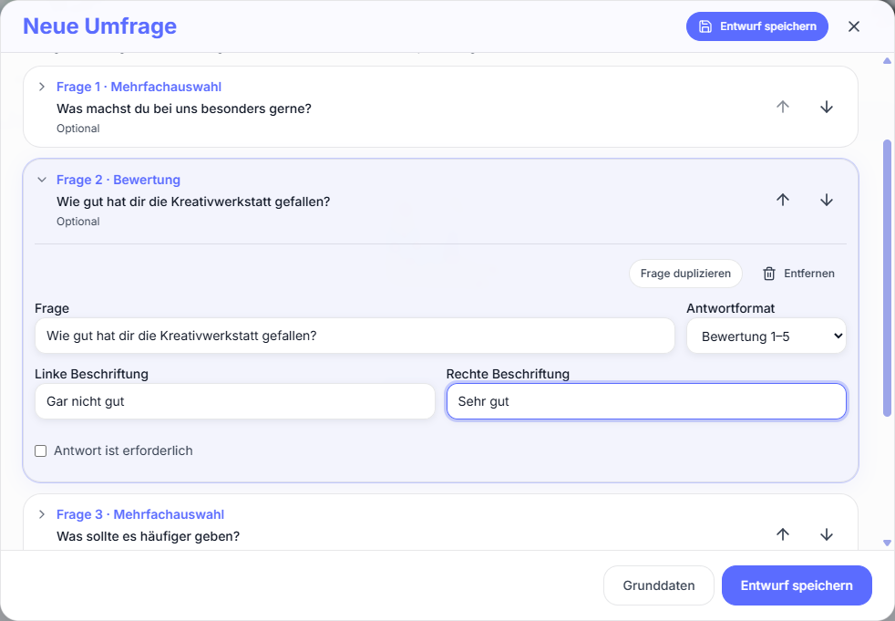
Der Testfragebogen enthält vier optionale Fragen. Eine Auswahlfrage mit Vorlagenplatzhaltern wurde bewusst nicht beantwortet. Für eine echte Erhebung muss sie vor dem Start vervollständigt oder entfernt werden. Die Demo ist ein Bedienungsbeispiel, kein validiertes Messinstrument.
21. Starten und Teilnahme testen
Umfrage öffnen → Starten → Überblick → Teilnahme öffnen
- Prüfe den Entwurf und klicke Starten. Im Überblick muss der Status Aktiv erscheinen.
- Nun stehen QR-Code & Link zur Verfügung. Teilnahme öffnen zeigt die öffentliche Teilnahmeansicht.
- Teilnehmende beantworten die Fragen schrittweise mit Weiter; optionale Fragen können übersprungen werden.
- Erst Abschicken übermittelt die Antworten. Die Dankeseite bestätigt den Abschluss.

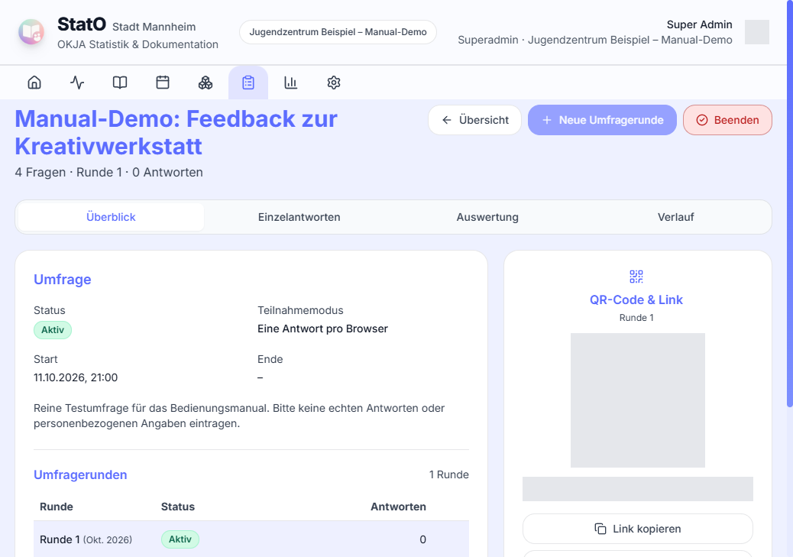
Ein Browser ist keine Person. Die Wiederholungssperre arbeitet bestmöglich im Browser. Andere Geräte, Browser oder gelöschter Speicher können die Zuordnung verändern. Auf gemeinsamen Geräten verhindert die Standardsperre möglicherweise Antworten weiterer Personen; mit Mehrfachantworten fehlt diese Begrenzung.
So sieht die Teilnahme aus

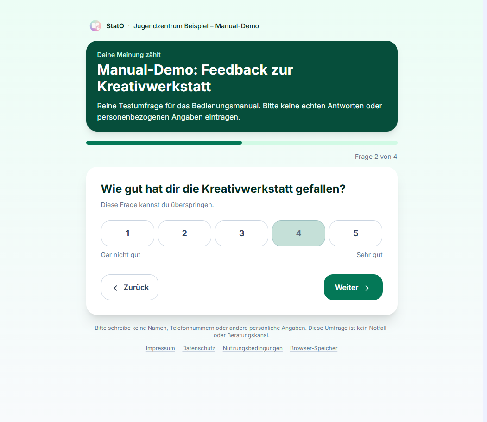
Die Teilnahmeansicht weist darauf hin, keine Namen, Telefonnummern oder andere persönlichen Angaben einzutragen. Sie ist kein Notfall- oder Beratungskanal. Erklärt bei einer realen Durchführung, wo Beratung stattdessen erreichbar ist.
Teste vor einer echten Erhebung Verständlichkeit und Bedienbarkeit. Trenne Probeläufe von der späteren Auswertung: Testantworten dürfen nicht als echte Rückmeldungen berichtet werden.
22. Beenden und Ergebnisse lesen
Umfrage → Beenden → Umfrage beenden → Auswertung
- Zum Abschluss Beenden wählen und mit Umfrage beenden bestätigen. Der öffentliche Link und QR-Code werden geschlossen.
- Im Überblick den Status „Beendet“, Zeitraum und den angezeigten Löschtermin für Einzelantworten prüfen.
- Unter Auswertung Gesamtantworten, Rücklaufquote und die Antwortanzahl jeder Frage lesen. Übersprungene Fragen haben kleinere Bezugszahlen.
- Einzelantworten und Verlauf sind weitere Ansichten; Neue Umfragerunde bietet eine weitere Runde. Exporte vor Weitergabe auf sensible Freitexte prüfen.

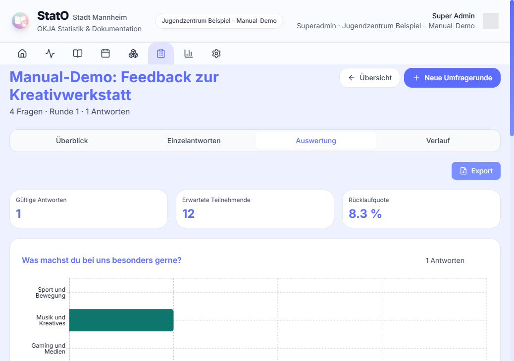
Keine Repräsentativität aus einer Prozentzahl ableiten. Die erwartete Anzahl ist eine eingetragene Bezugszahl, kein Beweis einer erreichten Grundgesamtheit. Eine Testantwort belegt nur den Ablauf. Nichtantwort, freiwillige Teilnahme und Auswahl der Befragten begrenzen die Aussagekraft.
Start, öffentliche Testabgabe, Antwortauswertung und Beenden wurden geprüft. Weitere Runden, automatische Löschung und Umfrageexporte wurden nicht ausgeführt.
23. Gemeinsame Grundlagen vererben
Einrichtung · zuständige AdministrationBenutzermenü → Organisationen → Vererbungsregeln → Unterorganisationen
- Lege in der übergeordneten Organisation gemeinsame Kategorien und Alterskohorten fachlich abgestimmt an.
- Öffne deren Vererbungsregeln. Der Reiter Organisation betrifft die eigene Einheit; Unterorganisationen setzt die Vorgaben für Nachkommen.
- Wähle pro Bereich Alle aktuellen und zukünftigen … vererben oder eine Individuelle Auswahl. Automatische Vererbung übernimmt künftig sichtbare Einträge ebenfalls.
- Entscheide bewusst über lokale Ergänzungen und darüber, ob Admins von Unterorganisationen ihre Vererbungen anpassen dürfen. Speichere die Regeln.
- Wähle die Unterorganisation und prüfe die wirksamen Einträge unter Einstellungen → Kohorten beziehungsweise Kategorien.

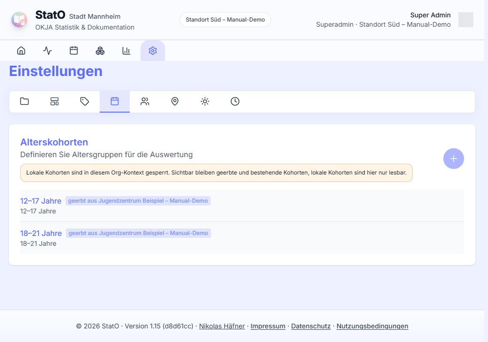
Vererbung schafft gemeinsame Auswahlmöglichkeiten, keine Messgarantie. Vorgaben wirken auf direkte und weitere Nachkommen, solange keine ausdrückliche Überschreibung greift. Bestehende lokale Einträge können sichtbar bleiben. Gleiche Bezeichnungen ersetzen keine gemeinsamen Zählregeln und bedeuten keine automatische Zusammenführung von Aktivitätsdaten.
Im Demo-Träger werden alle sichtbaren Kategorien, Tags und Kohorten automatisch weitergegeben; lokale Kategorien und Kohorten sind gesperrt, lokale Tags bleiben erlaubt. Die Anpassung durch untergeordnete Admins wurde ausgeschaltet. Das ist ein Beispiel, keine universelle Empfehlung. Die fachliche Entscheidung und Änderungsregeln beschreibt der separate Leitfaden.
Bereit für den ersten eigenen Termin?
- Organisation stimmt. Der richtige Name steht im Kopfbereich.
- Grundlagen sind vorbereitet. Kategorien, passende Alterskohorten und benötigte Standorte sind vorhanden.
- Das Angebot existiert. Titel, Typ und gegebenenfalls Standardzeiten sind geprüft.
- Eine Erfassungsart ist gewählt. Nachträgliche Dokumentation oder laufende Tageserfassung – nicht beides für denselben Termin.
- Der Termin ist kontrolliert. Datum, tatsächliche Zeiten, Standort und Zählwerte stimmen.
- Die Speicherung ist bestätigt. Der Eintrag erscheint in der Aktivitätsliste mit plausibler Dauer und Teilnahmenzahl.
- Die Auswertung ist plausibel. Organisation, Zeitraum und Filter passen zum betrachteten Angebot.
Häufige Fragen
Ich sehe keine Eingabefelder für Altersgruppen.
Prüfe unter Einstellungen → Kohorten, ob im aktiven Org-Kontext Alterskohorten eingerichtet sind.
Die Uhrzeit ist schon ausgefüllt. Muss ich sie prüfen?
Ja. Standardzeiten aus dem Projekt sind eine Hilfe, aber die dokumentierte Dauer muss zum tatsächlichen Termin passen.
Nach der Tageserfassung ist noch kein Eintrag sichtbar.
Prüfe, ob du im Abschlussdialog wirklich gespeichert hast oder ob die Sitzung noch läuft. Kontrolliere danach die Organisation und die Filter in der Liste.
Ein Menüpunkt oder eine Aktion fehlt.
Die sichtbaren Funktionen hängen von Berechtigungen und freigeschalteten Modulen ab. Lass die zuständige Administration prüfen, ob dein Zugang für die Aufgabe vorgesehen ist.